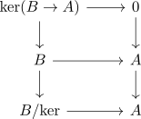
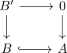

torsion pair of C_A,B
Proposition
Let $\mathcal{B} \subseteq \mathcal{A}$ be an abelian full subcategory closed under quotient objects. Then $\mathcal{B}, \mathcal{E}_{\mathcal{A}, \mathcal{B}}$ is a torsion pair
Proof
quotient
Let $B \rightarrow A$ be a morphism. Then we claim that

witnesses $B \rightarrow A$ as extension
todo
contractible hom
Let $(B' \rightarrow 0)$ and $(B \hookrightarrow A)$ be two elements. Then a morphism is in particular a commutative diagram

and since $B \hookrightarrow A$ is a monomorphism, both arrows must be the zero morphism.